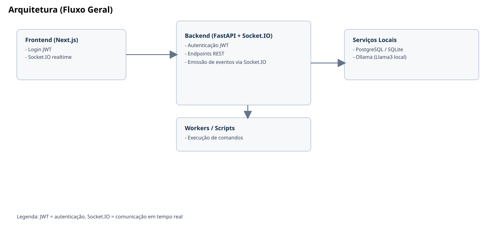
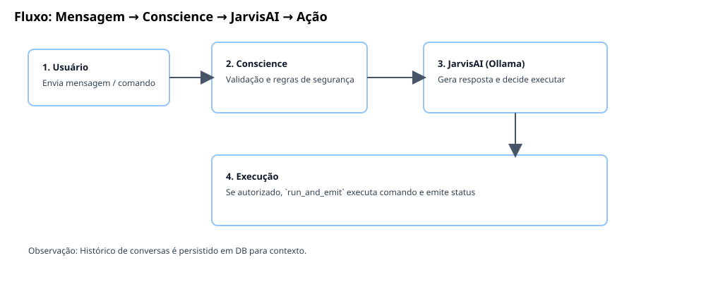
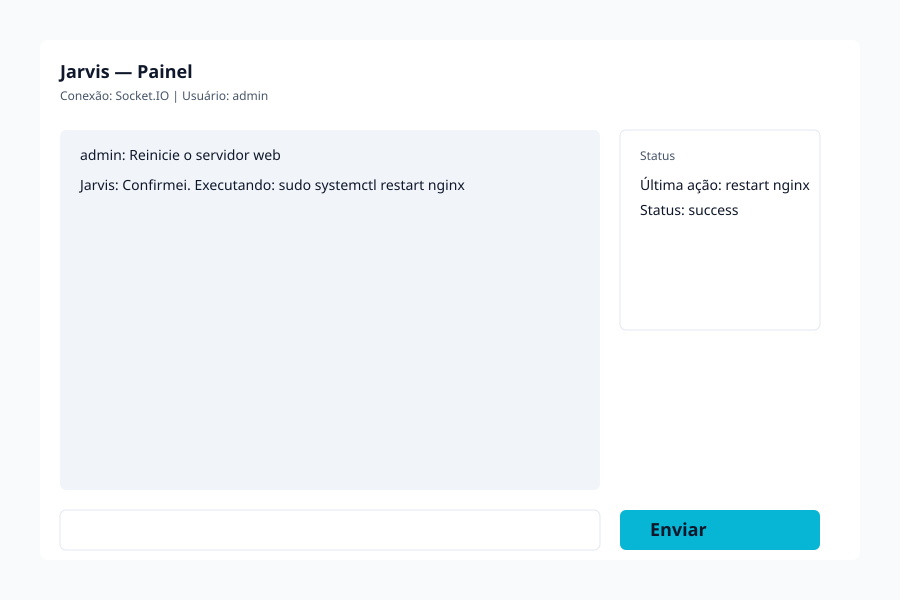

Setup
python3 -m venv .venv
source .venv/bin/activate
pip install -r requirements.txt
PYTHONPATH=. python3 scripts/bootstrap_db.py --create-admin admin admin
Projeto completo para automação local com FastAPI, Socket.IO, autenticação JWT, políticas de execução e feedback visual em tempo real na web e no desktop.
Endpoints REST e Socket.IO com autenticação JWT e validação de conexão por token.
/api/execute protegido por JWT, policy de segurança e allowlist de comandos.
Efeito visual no dashboard web e orb desktop com fx-on/fx-off.



| Versão | Data | Status | Resumo |
|---|---|---|---|
| v0.4.0 | 2026-05-03 | Atual | Hardening em /api/execute, testes iniciais, systemd, desktop FX e docs visuais completas. |
| v0.3.0 | 2026-05-03 | Estável | Autenticação JWT em login e Socket.IO, scaffolds backend/frontend e CLI funcional. |
| v0.2.0 | 2026-05-03 | Histórico | Estrutura inicial, scripts e documentação base. |
| v0.5.0 (planejada) | TBD | Planejada | CI, Docker, melhorias de segurança (rate limiting/refresh tokens), expansão de testes. |
Clone direto do repositório:
Gerar tarball para distribuição interna:
Rate limiting, refresh tokens, auditoria detalhada por usuário.
Integração Ollama completa e STT/TTS local funcional.
CI/CD, Docker, monitoramento e hardening de produção.